RoboCerebra rollouts, rows C and D
Single rollouts rerun with rendering on, the same policy and budgets as the full runs.
Each frame is agentview | wrist camera, with the step and the last completed subtask.
Keyframes are taken at the step each subtask completed. Green: every subtask done.
A row D rollout is not reproducible at a fixed seed, so it can differ from the full run's.
Row C: continuous, one policy call a segment, no resume(k) Ideal/case2, seed 0: 3/4 subtasks step 0: start step 55: pick cream_cheese_1 step 137: in cream_cheese_1 → white_storage_box_1_top_side 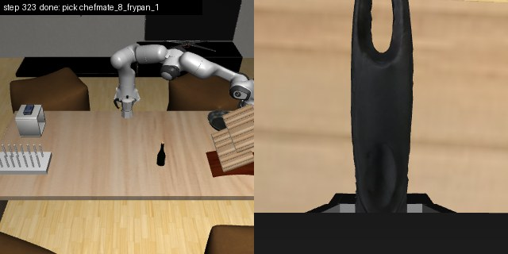
step 323: pick chefmate_8_frypan_1 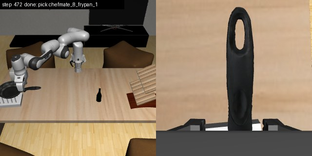
step 472: last step step 2 missed: not registered step 3 missed: not registered Ideal/case7, seed 0: 6/7 subtasks step 0: start 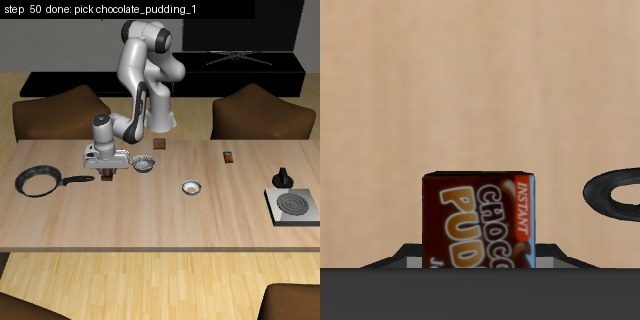
step 50: pick chocolate_pudding_1 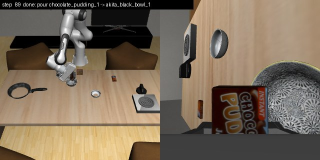
step 89: pour chocolate_pudding_1 → akita_black_bowl_1 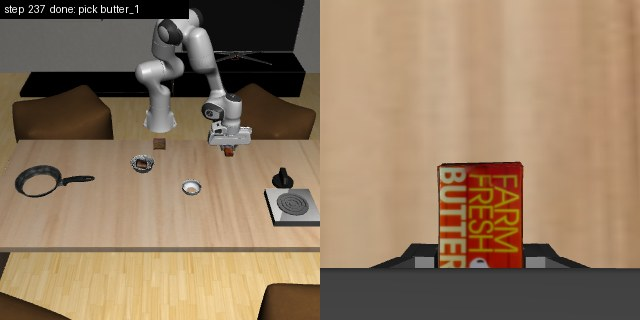
step 237: pick butter_1 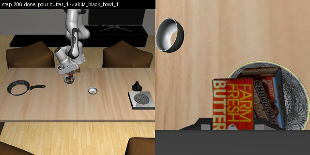
step 286: pour butter_1 → akita_black_bowl_1 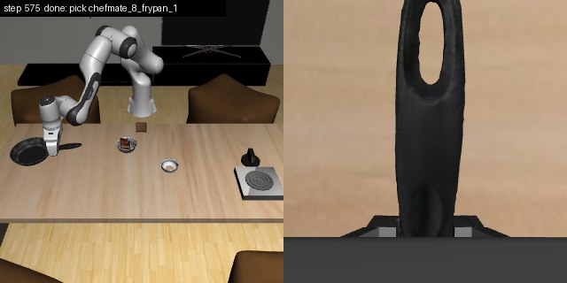
step 575: pick chefmate_8_frypan_1 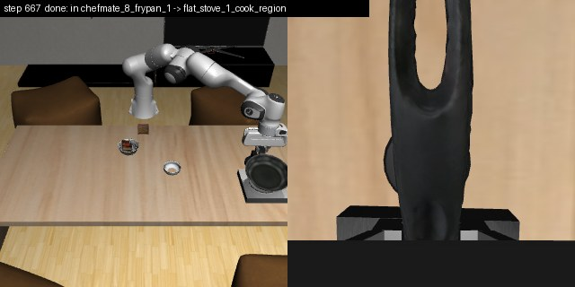
step 667: in chefmate_8_frypan_1 → flat_stove_1_cook_region 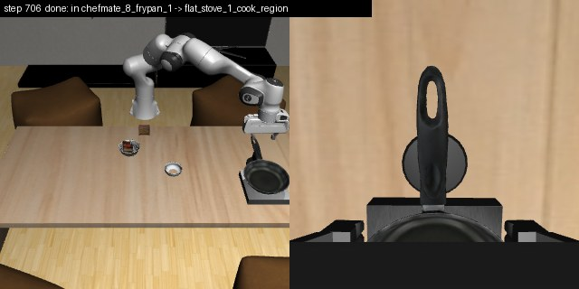
step 706: last step step 4 missed: predicate 'turnon' is not supported (['turnon', 'flat_stove_1']) Ideal/case8, seed 0: 3/7 subtasks step 0: start 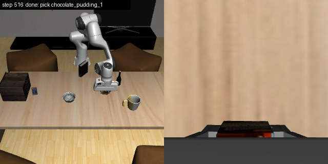
step 516: pick chocolate_pudding_1 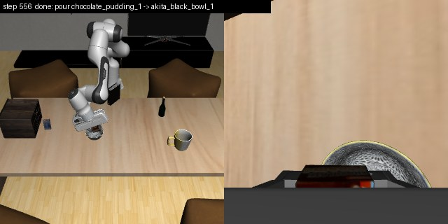
step 556: pour chocolate_pudding_1 → akita_black_bowl_1 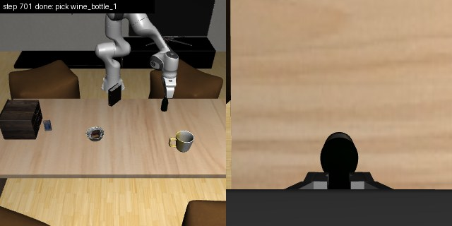
step 701: pick wine_bottle_1 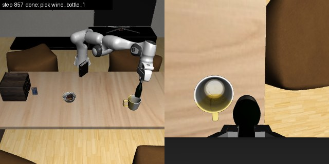
step 857: last step step 0 missed: predicate 'open' is not supported (['open', 'short_cabinet_1_middle_region']) step 1 missed: not registered step 2 missed: not registered step 6 missed: not registered Memory_Execution/case1, seed 0: 4/7 subtasks 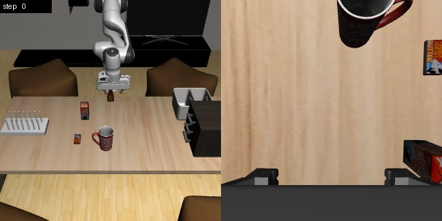
step 0: start 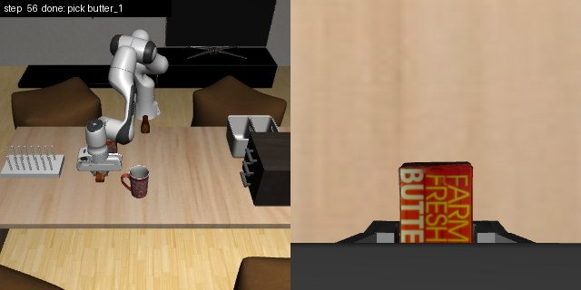
step 56: pick butter_1 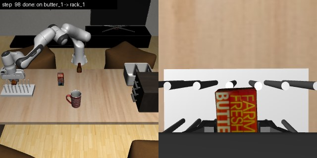
step 98: on butter_1 → rack_1 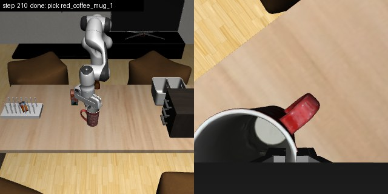
step 210: pick red_coffee_mug_1 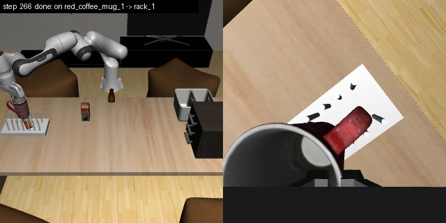
step 266: on red_coffee_mug_1 → rack_1 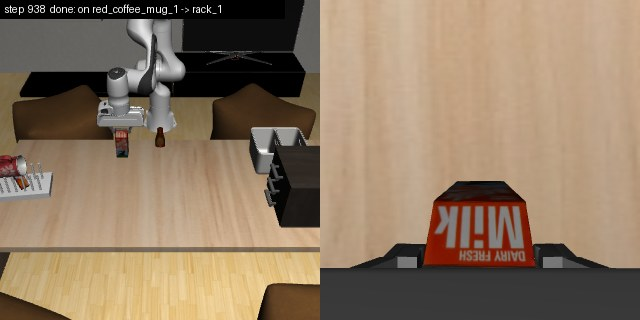
step 938: last step step 4 missed: not registered step 5 missed: not registered step 6 missed: carrying milk_1 to coffee_table_table_region does not plan step 7 missed: predicate 'open' is not supported (['open', 'wooden_cabinet_1_top_region']) Row D: one long_tamp mission over the whole goal Ideal/case2, seed 0: 4/4 subtasks 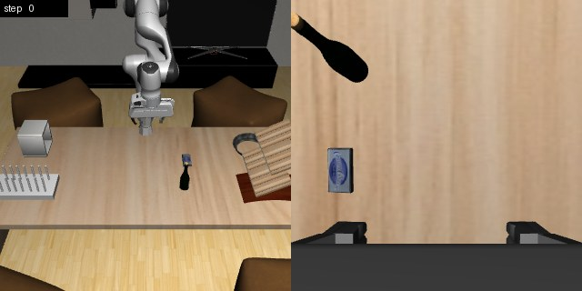
step 0: start 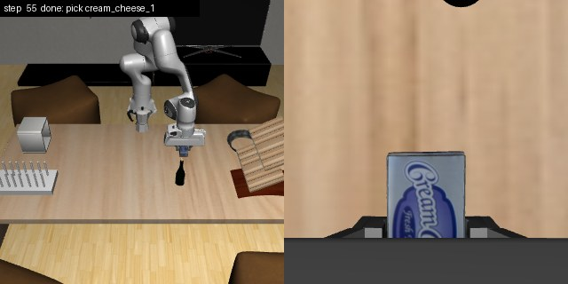
step 55: pick cream_cheese_1 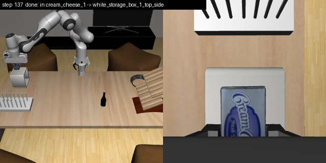
step 137: in cream_cheese_1 → white_storage_box_1_top_side 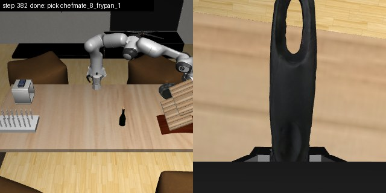
step 382: pick chefmate_8_frypan_1 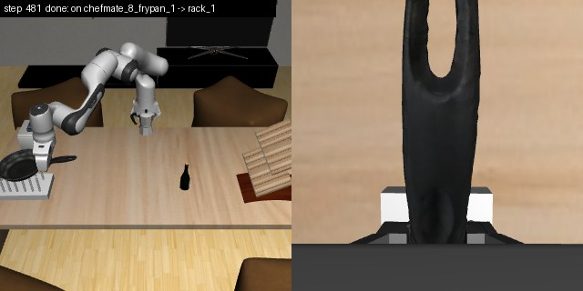
step 481: on chefmate_8_frypan_1 → rack_1 step 481: last step Ideal/case7, seed 0: 6/7 subtasks 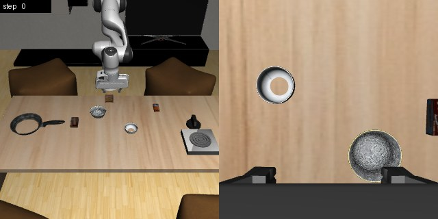
step 0: start 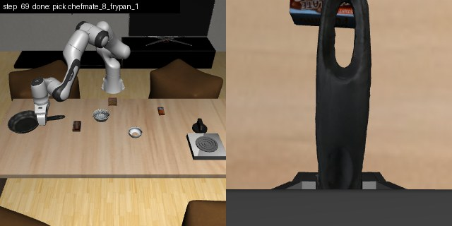
step 69: pick chefmate_8_frypan_1 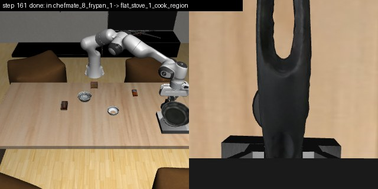
step 161: in chefmate_8_frypan_1 → flat_stove_1_cook_region 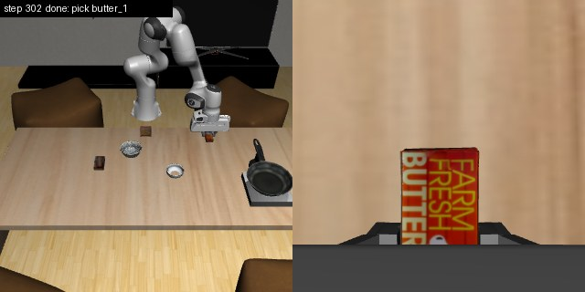
step 302: pick butter_1 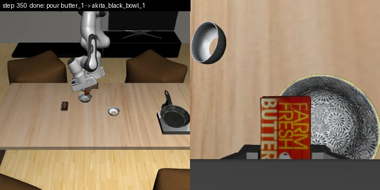
step 350: pour butter_1 → akita_black_bowl_1 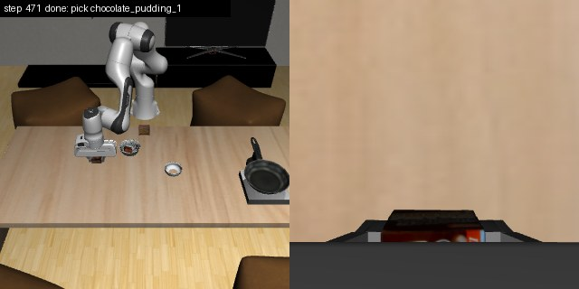
step 471: pick chocolate_pudding_1 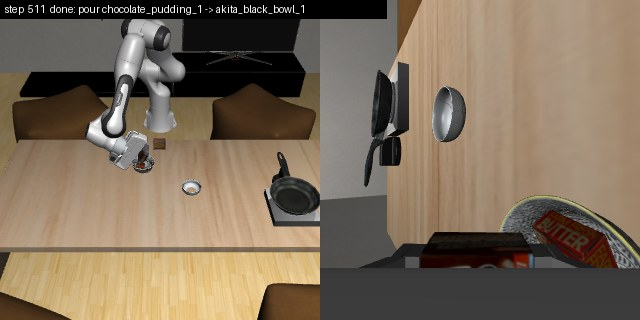
step 511: pour chocolate_pudding_1 → akita_black_bowl_1 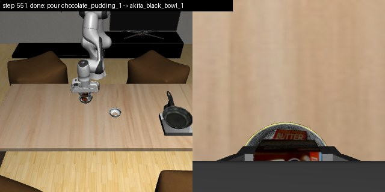
step 551: last step Ideal/case8, seed 0: 2/7 subtasks 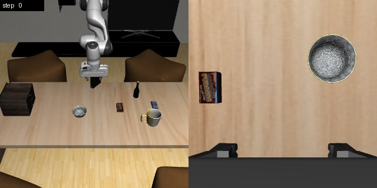
step 0: start 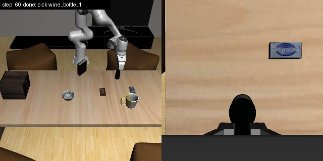
step 60: pick wine_bottle_1 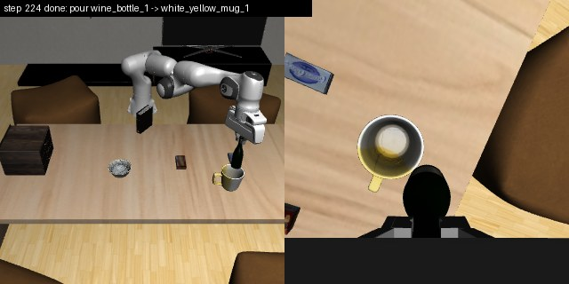
step 224: pour wine_bottle_1 → white_yellow_mug_1 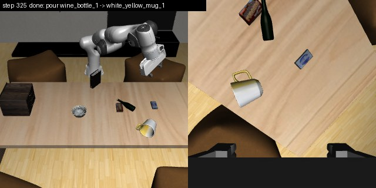
step 325: last step given up: chocolate_pudding_1